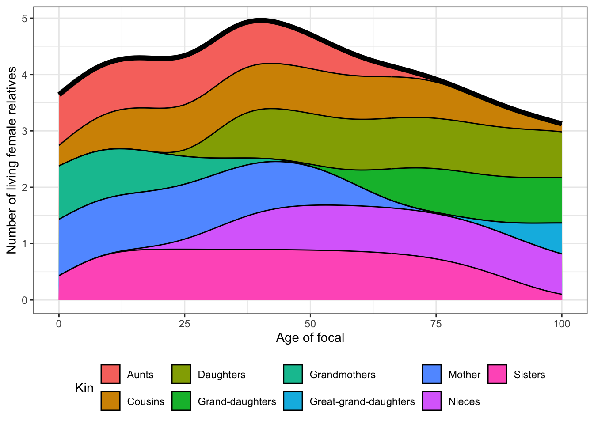

Modelling Kinship Dynamics through
DemoKin
Updated: 2025-02-27
Introduction
Kinship is a fundamental property of human populations and a key form of social structure. Demographers have long been interested in the interplay between demographic change and family configuration. This has led to the development of sophisticated methodological and conceptual approaches for the study of kinship, some of which are reviewed in this course.
Please make sure to complete the following preparatory steps before the training workshop:
- If you haven’t already, install R and RStudio. This is a useful tutorial: https://rstudio-education.github.io/hopr/starting.html
- Install the following packages in R:
install.packages("dplyr")
install.packages("tidyr")
install.packages("ggplot2")
install.packages("readr")
install.packages("knitr")
install.packages("data.table")
install.packages("Matrix")
# DemoKin is available on [CRAN](https://cran.r-project.org/web/packages/DemoKin/index.html),
# but we'll use the development version on [GitHub](https://github.com/IvanWilli/DemoKin):
install.packages("remotes")
remotes::install_github("IvanWilli/DemoKin")Now, check if the packages can be loaded:
Model Stratified by Age
Simple model: One-sex time-invariant
Contents
First, we compute kin counts in a time-invariant
framework. We assume that Focal and all of her relatives experience the
2015 mortality and fertility rates throughout their entire lives (Caswell 2019). The DemoKin package
includes data from Sweden as an example: age-by-year matrices of
survival probabilities (swe_px), survival ratios
(swe_Sx), fertility rates (swe_asfr), and population
numbers (swe_pop). You can see the data contained in
DemoKin with data(package="DemoKin"). This
data comes from the Human Mortality
Database and Human
Fertility Database (see ?DemoKin::get_HMDHFD).
1. Load packages
Load packages that will be useful:
Load a couple of functions we prepared:
2. Demographic data
In order to implement the time-invariant models, the function
DemoKin::kin expects a vector of survival ratios and
another vector of fertility rates. In this example, we get the data for
the year 2015, and run the matrix models.
The first dataframe is swe_px, a long-format data frame
with year- and age-specific survival probabilities (‘px’) from a life
table and the second dataframeswe_asfr shows the
age-specific fertility rates (‘px’).
For women:
## 1900 1901 1902 1903 1904 1905 1906 1907 1908 1909
## 0 0.91060 0.90673 0.92298 0.91890 0.92357 0.92094 0.92717 0.93134 0.92217 0.93524
## 1 0.97225 0.97293 0.97528 0.97549 0.97847 0.97844 0.98066 0.98175 0.97928 0.98415
## 2 0.98525 0.98579 0.98630 0.98835 0.98921 0.98914 0.99050 0.99149 0.99135 0.99200
## 3 0.98998 0.98947 0.99079 0.99125 0.99226 0.99112 0.99341 0.99351 0.99383 0.99429
## 4 0.99158 0.99133 0.99231 0.99352 0.99272 0.99300 0.99392 0.99539 0.99526 0.99560
## 5 0.99310 0.99253 0.99401 0.99388 0.99468 0.99394 0.99542 0.99587 0.99570 0.99624
## 6 0.99423 0.99361 0.99500 0.99518 0.99535 0.99441 0.99566 0.99662 0.99672 0.99712
## 7 0.99540 0.99488 0.99585 0.99542 0.99587 0.99559 0.99666 0.99660 0.99671 0.99723
## 8 0.99489 0.99475 0.99573 0.99605 0.99635 0.99513 0.99630 0.99665 0.99713 0.99772
## 9 0.99549 0.99529 0.99635 0.99670 0.99672 0.99572 0.99699 0.99696 0.99733 0.99739## 1900 1901 1902 1903 1904 1905 1906 1907 1908 1909
## 19 0.04409 0.04357 0.04742 0.04380 0.04523 0.04415 0.04779 0.04910 0.05205 0.05274
## 20 0.06776 0.07122 0.06989 0.06792 0.06952 0.06981 0.07187 0.07211 0.07994 0.07930
## 21 0.09643 0.09931 0.09613 0.09654 0.09546 0.09437 0.09761 0.10108 0.10547 0.10456
## 22 0.12512 0.12555 0.12526 0.11899 0.12269 0.11923 0.12264 0.12384 0.12738 0.12639
## 23 0.14631 0.14792 0.14743 0.14237 0.14304 0.14502 0.14433 0.14440 0.14694 0.14607
## 24 0.16285 0.16847 0.16455 0.16279 0.15931 0.15960 0.16276 0.16271 0.16524 0.16087
## 25 0.18104 0.18322 0.17980 0.17339 0.17595 0.17445 0.17302 0.17246 0.17631 0.17423
## 26 0.18762 0.19279 0.19170 0.18754 0.18431 0.18248 0.18763 0.18405 0.18594 0.18250
## 27 0.19838 0.20267 0.19365 0.19035 0.19298 0.19016 0.19172 0.18634 0.18591 0.18912
## 28 0.20742 0.20543 0.19983 0.19558 0.19680 0.19696 0.19541 0.19489 0.19251 0.19381
## 29 0.20192 0.21060 0.20264 0.19938 0.19541 0.19482 0.19236 0.19205 0.19452 0.18839# First, get vectors for a given year
swe_surv_2015 <- swe_px[,"2015"]
swe_asfr_2015 <- swe_asfr[,"2015"]Let’s see what data we will be using. The first dataframe is
swe_px, a wide-format data frame with year- and
age-specific survival probabilities (‘px’) from a life table, the second
dataframeswe_asfr shows the age-specific fertility rates
(‘px’) and the third dataframe swe_pop shows the
age-specific population counts.
For women, we print the value at the first several ages in year 1950 and 2000:
## 1950 2000
## 0 0.98237 0.99717
## 1 0.99833 0.99984
## 2 0.99885 0.99986
## 3 0.99904 0.99996
## 4 0.99938 0.99988
## 5 0.99920 0.99992## 1950 2000
## 0 0 0
## 1 0 0
## 2 0 0
## 3 0 0
## 4 0 0
## 5 0 0## 1950 2000
## 0 57780 43058
## 1 60451 43599
## 2 61288 44356
## 3 62970 46880
## 4 63089 50383
## 5 62963 55150Let us visualise some of our demographic data. We start with the probability of dying between ages \(x\) and \(x+1\),\(q_x\) in a life table for women:
swe_px %>%
as.data.frame()%>%
mutate(age = c(0:100))%>%
pivot_longer(cols= -c(age), names_to = "year", values_to = "px")%>%
filter(year %in% seq(1950, 2020, 30)) %>%
mutate(qx = 1-px) %>%
ggplot() +
geom_line(aes(x = age, y = qx, col = as.character(year)), linewidth = 1) +
scale_y_log10() +
labs(y = "Probability of dying, qx", col = NULL) +
theme_bw() +
theme(legend.position = "bottom")Next, we have age-specific fertility rates for multiple years:
swe_asfr %>%
as.data.frame()%>%
mutate(age = c(0:100))%>%
pivot_longer(cols= -c(age), names_to = "year", values_to = "fx")%>%
filter(year %in% seq(1950, 2020, 30)) %>%
ggplot() +
geom_line(aes(x = age, y = fx, col = as.character(year)), linewidth = 1) +
labs(y = "Age-specific fertility rate, fx", col = NULL) +
theme_bw() +
theme(legend.position = "bottom")Finally, we have the population counts:
swe_pop %>%
as.data.frame()%>%
mutate(age = c(0:100))%>%
pivot_longer(-age, names_to = "year", values_to = "pop") %>%
mutate(year = gsub("X", "", year)) %>%
filter(year %in% seq(1950, 2020, 30)) %>%
ggplot() +
geom_line(aes(x = age, y = pop, col = as.character(year)), linewidth = 1) +
labs(y = "Population alive in thousands", col = NULL) +
theme_bw() +
theme(legend.position = "bottom")3. The DemoKin package
DemoKin can be used to compute the number and age
distribution of Focal’s relatives under a range of assumptions,
including living and deceased kin. Let’s explore the main functions.
3.1. The function kin()
The function DemoKin::kin() currently does most of the
heavy lifting in terms of implementing matrix kinship models.
For this example, we will run the simplest model, with the following assumptions:
- Rates are time-invariant; i.e., the same set of rates apply at all times. For this example, these will be the 2020 rates.
- The population has one one-sex; i.e., we only use female data as input and trace descent through female lines.
Now we can run the kinship models:
3.2. Arguments of kin()
- p numeric. A vector (atomic) or matrix of survival probabilities with rows as ages (and columns as years in case of matrix).
- f numeric. Same as U but for fertility rates.
- time_invariant logical. Assume time-invariant rates. Default TRUE.
- output_kin character. kin types to return: “m” for mother, “d” for daughter, …
3.3 Relative types
Relatives for the output_kin argument are identified by
a unique code. Note that the relationship codes used in
DemoKin differ from those in Caswell (2019). The equivalence between the two set of
codes is given in the following table:
## DemoKin Caswell Labels_female Labels_male
## 1 coa t Cousins from older aunts Cousins from older uncles
## 2 cya v Cousins from younger aunts Cousins from younger uncles
## 3 c <NA> Cousins Cousins
## 4 d a Daughters Sons
## 5 gd b Grand-daughters Grand-sons
## 6 ggd c Great-grand-daughters Great-grand-sons
## 7 ggm h Great-grandmothers Great-grandfathers
## 8 gm g Grandmothers Grandfathers
## 9 m d Mother Father
## 10 nos p Nieces from older sisters Nephews from older brothers
## 11 nys q Nieces from younger sisters Nephews from younger brothers
## 12 n <NA> Nieces Nephews
## 13 oa r Aunts older than mother Uncles older than fathers
## 14 ya s Aunts younger than mother Uncles younger than father
## 15 a <NA> Aunts Uncles
## 16 os m Older sisters Older brothers
## 17 ys n Younger sisters Younger brothers
## 18 s <NA> Sisters Brothers
## Labels_2sex
## 1 Cousins from older aunts/uncles
## 2 Cousins from younger aunts/uncles
## 3 Cousins
## 4 Children
## 5 Grand-childrens
## 6 Great-grand-childrens
## 7 Great-grandfparents
## 8 Grandparents
## 9 Parents
## 10 Niblings from older siblings
## 11 Niblings from younger siblings
## 12 Niblings
## 13 Aunts/Uncles older than parents
## 14 Aunts/Uncles younger than parents
## 15 Aunts/Uncles
## 16 Older siblings
## 17 Younger siblings
## 18 Siblings3.4. Value
DemoKin::kin() returns a list containing two data
frames: kin_full and kin_summary.
## List of 2
## $ kin_full : tibble [142,814 × 7] (S3: tbl_df/tbl/data.frame)
## ..$ kin : chr [1:142814] "d" "d" "d" "d" ...
## ..$ age_kin : int [1:142814] 0 0 0 0 0 0 0 0 0 0 ...
## ..$ age_focal: int [1:142814] 0 1 2 3 4 5 6 7 8 9 ...
## ..$ living : num [1:142814] 0 0 0 0 0 0 0 0 0 0 ...
## ..$ dead : num [1:142814] 0 0 0 0 0 0 0 0 0 0 ...
## ..$ cohort : logi [1:142814] NA NA NA NA NA NA ...
## ..$ year : logi [1:142814] NA NA NA NA NA NA ...
## $ kin_summary: tibble [1,414 × 10] (S3: tbl_df/tbl/data.frame)
## ..$ age_focal : int [1:1414] 0 0 0 0 0 0 0 0 0 0 ...
## ..$ kin : chr [1:1414] "coa" "cya" "d" "gd" ...
## ..$ year : logi [1:1414] NA NA NA NA NA NA ...
## ..$ cohort : logi [1:1414] NA NA NA NA NA NA ...
## ..$ count_living : num [1:1414] 0.2752 0.0898 0 0 0 ...
## ..$ mean_age : num [1:1414] 8.32 4.05 NaN NaN NaN ...
## ..$ sd_age : num [1:1414] 6.14 3.68 NaN NaN NaN ...
## ..$ count_dead : num [1:1414] 0.0000633 0.000037 0 0 0 ...
## ..$ count_cum_dead: num [1:1414] 0.0000633 0.000037 0 0 0 ...
## ..$ mean_age_lost : num [1:1414] 0 0 NaN NaN NaN 0 0 0 0 NaN ...kin_full
This data frame contains expected kin counts by year (or cohort), age of Focal, type of kin and, age of kin, including living and dead kin at that age.
## # A tibble: 6 × 7
## kin age_kin age_focal living dead cohort year
## <chr> <int> <int> <dbl> <dbl> <lgl> <lgl>
## 1 d 0 0 0 0 NA NA
## 2 d 0 1 0 0 NA NA
## 3 d 0 2 0 0 NA NA
## 4 d 0 3 0 0 NA NA
## 5 d 0 4 0 0 NA NA
## 6 d 0 5 0 0 NA NAkin_summary
This is a ‘summary’ data frame derived from kin_full. To
produce it, we sum over all ages of kin to produce a data frame of
expected kin counts by year or cohort and age of Focal (but not
by age of kin).
## # A tibble: 6 × 10
## age_focal kin year cohort count_living mean_age sd_age count_dead count_cum_dead
## <int> <chr> <lgl> <lgl> <dbl> <dbl> <dbl> <dbl> <dbl>
## 1 0 coa NA NA 0.275 8.32 6.14 0.0000633 0.0000633
## 2 0 cya NA NA 0.0898 4.05 3.68 0.0000370 0.0000370
## 3 0 d NA NA 0 NaN NaN 0 0
## 4 0 gd NA NA 0 NaN NaN 0 0
## 5 0 ggd NA NA 0 NaN NaN 0 0
## 6 0 ggm NA NA 0.320 84.4 6.43 0.0287 0.0287
## # ℹ 1 more variable: mean_age_lost <dbl>4. Kinship diagrams
We can visualize the kinship structure we just computed using a
network or ‘Keyfitz’ kinship diagram (Keyfitz,
Caswell, et al. 2005) with the plot_diagram
function. Let’s see the expected number of living kin for a 65 yo woman
in Singapore according to our model:
5. Number of living kin
Let’s run the model again with the same parameters, selecting
specific kin types (note the output_kin argument:
swe_2015 <-
kin(
p = swe_surv_2015
, f = swe_asfr_2015
, output_kin = c("c", "d", "gd", "ggd", "gm", "m", "n", "a", "s")
, time_invariant = TRUE
)Now, let’s visualize how the expected number of daughters, siblings,
cousins, etc., changes over the life course of Focal (now, with full
names to identify each relative type using the function
DemoKin::rename_kin()).
swe_2015$kin_summary %>%
rename_kin() %>%
ggplot() +
geom_line(aes(age_focal, count_living)) +
theme_bw() +
labs(x = "Age of focal", y= "Number of living female relatives") +
facet_wrap(~kin_label)Note that we are working in a time invariant framework. You can think of the results as analogous to life expectancy (i.e., expected years of life for a synthetic cohort experiencing a given set of period mortality rates).
How does overall family size (and family composition) vary over life for an average woman who survives to each age?
counts <-
swe_2015$kin_summary %>%
group_by(age_focal) %>%
summarise(count_living = sum(count_living)) %>%
ungroup()
swe_2015$kin_summary %>%
select(age_focal, kin, count_living) %>%
rename_kin() %>%
ggplot(aes(x = age_focal, y = count_living)) +
geom_area(aes(fill = kin_label), colour = "black") +
geom_line(data = counts, size = 2) +
labs(x = "Age of focal",
y = "Number of living female relatives",
fill = "Kin") +
theme_bw() +
theme(legend.position = "bottom")
6. Age distribution of living kin
How old are Focal’s relatives? Using the kin_full data
frame, we can visualize the age distribution of Focal’s relatives
throughout Focal’s life. For example when Focal is 65 (the red vertical
line in the plot), what are the ages of her relatives:
Adding time: One-sex time-varying
The demography of Sweden is, in reality, changing every year. This means that Focal and her relatives will have experienced changing mortality and fertility rates over time. We account for this, by using the one-sex time-varying models introduced by Caswell and Song (2021).
1. Run the model
Let’s take a look at the resulting kin counts for a Focal born in
1960, limiting the output to the relative types given in the argument
output_kin:
2. Living Realtives
Let’s take a look at the number of living kin again.
swe_time_varying$kin_summary %>%
ggplot(aes(age_focal,count_living,color=factor(cohort))) +
scale_y_continuous(name = "",labels = seq(0,3,.2),breaks = seq(0,3,.2))+
geom_line(color = 1)+
geom_vline(xintercept = 35, color=2)+
labs(y = "Expected number of living relatives") +
facet_wrap(~kin,scales = "free")+
theme_bw()3. Kin Loss
Kin loss can have severe consequences for bereaved relatives. It can
also affect the provision of care support and intergenerational
transfers over the life course. The function kin also
includes information on the number of relatives lost by Focal during her
life, stored in the column count_cum_death:
swe_time_varying$kin_summary %>%
ggplot() +
geom_line(aes(age_focal, count_cum_dead)) +
labs(y = "Expected number of deceased relatives") +
theme_bw() +
facet_wrap(~kin,scales="free")Given these population-level measures, we can compute Focal’s the mean age at the time of her relative’s death. For a Focal aged 50 yo:
swe_time_varying$kin_summary %>%
filter(age_focal == 50) %>%
select(kin,count_cum_dead,mean_age_lost) %>%
mutate_if(is.numeric, round, 2) %>%
kable()| kin | count_cum_dead | mean_age_lost |
|---|---|---|
| d | 0.01 | 32.59 |
| gd | 0.00 | 47.13 |
| ggd | 0.00 | 49.66 |
| ggm | 0.22 | 8.94 |
| gm | 0.84 | 24.96 |
| m | 0.32 | 37.83 |
4. Prevalences
Given the distribution of kin by age, we can compute the expected portion of living kin in some stage given a set of prevalences by age (e.g., a disease, employment, etc.). This is known as the Sullivan Method in the life-table literature. A matrix formulation for same results can be found in Caswell (2019), which can also be extended to a time-variant framework.
# let´s create some prevalence by age
swe_2015_prevalence <-
tibble(
age_kin = unique(swe_2015$kin_full$age_kin),
prev = .005 * exp(.05 * age_kin)
)
# join to kin count estimates and plot
swe_2015$kin_full %>%
left_join(swe_2015_prevalence) %>%
group_by(kin, age_focal) %>%
summarise(
prevalent = sum(living * prev),
no_prevalent = sum(living * (1-prev))
) %>%
pivot_longer(cols = prevalent:no_prevalent, names_to = "prevalence_state", values_to = "count") %>%
ggplot(aes(x=age_focal, y = count)) +
geom_area(aes(fill=prevalence_state)) +
facet_wrap(~kin) +
theme_bw()Adding sex: Two-sex time-invariant
Contents
Human males generally live shorter and reproduce later than females.
These sex-specific processes affect kinship dynamics in a number of
ways. For example, the degree to which an average member of the
population, call her Focal, has a living grandparent is affected by
differential mortality affecting the parental generation at older ages.
We may also be interested in considering how kinship structures vary by
Focal’s sex: a male Focal may have a different number of grandchildren
than a female Focal given differences in fertility by sex. Documenting
these differences matters since women often face greater expectations to
provide support and informal care to relatives. As they live longer,
they may find themselves at greater risk of being having no living kin.
The function kin2sex implements two-sex kinship models as
introduced by Caswell (2022). This
vignette show how to run two-sex models and highlights some of the
advantages of this model over one-sex models in populations with
time-invariant and time-variant rates.
1. Model input
Data on female fertility by age is less common than female fertility.
Schoumaker (2019) shows that male TFR is almost always higher than
female Total Fertility Rates (TFR) using a sample of 160 countries. For
this example, we use data from 2012 France to exemplify the use of the
two-sex function. Data on female and male fertility and mortality are
included in DemoKin. In this population, male and female
TFR is almost identical (1.98 and 1.99) but the distributions of
fertility by sex varies over age:
fra_fert_f <- fra_asfr_sex[,"ff"]
fra_fert_m <- fra_asfr_sex[,"fm"]
fra_surv_f <- fra_surv_sex[,"pf"]
fra_surv_m <- fra_surv_sex[,"pm"]
sum(fra_fert_m)-sum(fra_fert_f)## [1] -0.0115data.frame(value = c(fra_fert_f, fra_fert_m, fra_surv_f, fra_surv_m),
age = rep(0:100, 4),
sex = rep(c(rep("f", 101), rep("m", 101)), 2),
risk = c(rep("fertility rate", 101 * 2), rep("survival probability", 101 * 2))) %>%
ggplot(aes(age, value, col=sex)) +
geom_line() +
facet_wrap(~ risk, scales = "free_y") +
theme_bw()2. Run the model
We now introduce the functions kin2sex, which is similar
to the one-sex function kin (see ?kin) with
two exceptions. First, the user needs to specify mortality and fertility
by sex. Second, the user must indicate the sex of Focal (which was
assumed to be female in the one-sex model). Let us first consider the
application for time-invariant populations:
kin_result <- kin2sex(
pf = fra_surv_f,
pm = fra_surv_m,
ff = fra_fert_f,
fm = fra_fert_m,
time_invariant = TRUE,
sex_focal = "f",
birth_female = .5
)The output of kin2sex is equivalent to that of
kin, except that it includes a column sex_kin
to specify the sex of the given relatives.
Let’s group aunts and siblings to visualize the number of living kin by Focal’s age.
kin_out <- kin_result$kin_summary %>%
mutate(kin = case_when(kin %in% c("s", "s") ~ "s",
kin %in% c("ya", "oa") ~ "a",
T ~ kin)) %>%
filter(kin %in% c("d", "m", "gm", "ggm", "s", "a"))
kin_out %>%
group_by(kin, age_focal, sex_kin) %>%
summarise(count=sum(count_living)) %>%
ggplot(aes(age_focal, count, fill=sex_kin))+
geom_area()+
theme_bw() +
facet_wrap(~kin)A note on terminology
The function kin2sex uses the same codes as
kin to identify relatives (see
demokin_codes()). Note that when running a two-sex model,
the code ‘m’ refers to either mothers or fathers! Use the column
sex_kin to determine the sex of a given relatives. For
example, in order to consider only sons and ignore daughters, use:
## # A tibble: 6 × 11
## age_focal kin sex_kin year cohort count_living mean_age sd_age count_dead
## <int> <chr> <chr> <lgl> <lgl> <dbl> <dbl> <dbl> <dbl>
## 1 0 d m NA NA 0 NaN NaN 0
## 2 1 d m NA NA 0 NaN NaN 0
## 3 2 d m NA NA 0 NaN NaN 0
## 4 3 d m NA NA 0 NaN NaN 0
## 5 4 d m NA NA 0 NaN NaN 0
## 6 5 d m NA NA 0 NaN NaN 0
## # ℹ 2 more variables: count_cum_dead <dbl>, mean_age_lost <dbl>Information on kin availability by sex allows us to consider sex ratios, a traditional measure in demography, with females often in denominator. The following figure, for example, shows that a 25yo French woman in our hypothetical population can expect to have 0.5 grandfathers for every grandmother:
kin_out %>%
group_by(kin, age_focal) %>%
summarise(sex_ratio=sum(count_living[sex_kin=="m"], na.rm=T)/sum(count_living[sex_kin=="f"], na.rm=T)) %>%
ggplot(aes(age_focal, sex_ratio))+
geom_line()+
theme_bw() +
facet_wrap(~kin, scales = "free")The experience of kin loss for Focal depends on differences in mortality between sexes. A female Focal starts losing fathers earlier than mothers. We see a slightly different pattern for grandparents since Focal’s experience of grandparental loss is dependent on the initial availability of grandparents (i.e. if Focal’s grandparent died before her birth, she will never experience his death).
Adding sex and time: Two-sex time-varying + approximation
Contents
We look at populations where demographic rates are not static but change on a yearly basis.
1. Model input
For this, we consider the case of Sweden using data pre-loaded in
DemoKin. For this example, we will create ‘pretend’ male
fertility rates by slightly perturbing the existing female rates. This
is a toy example, since a real two-sex model should use actual female
and male rates as inputs.
years <- ncol(swe_px)
ages <- nrow(swe_px)
swe_surv_f_matrix <- swe_px
swe_surv_m_matrix <- swe_px ^ 1.5 # artificial perturbation for this example
swe_fert_f_matrix <- swe_asfr
swe_fert_m_matrix <- rbind(matrix(0, 5, years),
swe_asfr[-((ages-4):ages),]) * 1.05 # artificial perturbation for this exampleThis is how it looks for year 1900:
bind_rows(
data.frame(age = 0:100, sex = "Female", component = "Fertility rate", value = swe_fert_f_matrix[,"1900"]),
data.frame(age = 0:100, sex = "Male", component = "Fertility rate", value = swe_fert_m_matrix[,"1900"]),
data.frame(age = 0:100, sex = "Female", component = "Survival probability", value = swe_surv_f_matrix[,"1900"]),
data.frame(age = 0:100, sex = "Male", component = "Survival probability", value = swe_surv_m_matrix[,"1900"])) %>%
ggplot(aes(age, value, col = sex)) +
geom_line() +
theme_bw() +
facet_wrap(~component, scales = "free")2. Run the model
We now run the time-variant two-sex models (note the
time_invariant = FALSE argument):
3. Kin Availability
We can plot data on kin availability alongside values coming from a time-invariant model to show how demographic change matters: the time-variant models take into account changes derived from the demographic transition, whereas the time-invariant models assume never-changing rates.
kin_out_time_invariant <- kin2sex(
swe_surv_f_matrix[,"1900"], swe_surv_m_matrix[,"1900"],
swe_fert_f_matrix[,"1900"], swe_fert_m_matrix[,"1900"],
sex_focal = "f", birth_female = .5)
kin_out_time_variant$kin_summary %>%
filter(cohort == 1900) %>% mutate(type = "variant") %>%
bind_rows(kin_out_time_invariant$kin_summary %>% mutate(type = "invariant")) %>%
mutate(kin = case_when(kin %in% c("ys", "os") ~ "s",
kin %in% c("ya", "oa") ~ "a",
T ~ kin)) %>%
filter(kin %in% c("d", "m", "gm", "ggm", "s", "a")) %>%
group_by(type, kin, age_focal, sex_kin) %>%
summarise(count=sum(count_living)) %>%
ggplot(aes(age_focal, count, linetype=type))+
geom_line()+ theme_bw() +
facet_grid(cols = vars(kin), rows=vars(sex_kin), scales = "free")4. Approximations
Caswell (2022) introduced two approaches for approximating two-sex kinship structures for cases when male demographic rates are not available. The first is the androgynous approximation, which assumes equal fertility and survival for males and females. The second is the use of GKP factors apply to each type of relative (e.g., multiplying mothers by two to obtain the number of mothers and fathers).
Here, we present a visual evaluation of the accuracy of these
approximations by comparing to ‘true’ two-sex models using the French
data included with DemoKin for time-invariant models (Caswell 2022). We start by considering the
androgynous approximation. We compare expected kin counts by age and
find high levels of consistency for all kin types, except for
grandfathers and great-grandfathers:
kin_out <- kin2sex(fra_surv_f, fra_surv_m, fra_fert_f, fra_fert_m, sex_focal = "f", birth_female = .5)
kin_out_androgynous <- kin2sex(fra_surv_f, fra_surv_f, fra_fert_f, fra_fert_f, sex_focal = "f", birth_female = .5)
bind_rows(
kin_out$kin_summary %>% mutate(type = "full"),
kin_out_androgynous$kin_summary %>% mutate(type = "androgynous")) %>%
group_by(kin, age_focal, sex_kin, type) %>%
summarise(count = sum(count_living)) %>%
ggplot(aes(age_focal, count, linetype = type)) +
geom_line() +
theme_bw() +
theme(legend.position = "bottom", axis.text.x = element_blank()) +
facet_grid(row = vars(sex_kin), col = vars(kin), scales = "free")Next, we consider the use of GKP factors and find that it also approximates relatively accurately kin counts at different ages of Focal. These are presented as examples only. Users are invited to perform more rigorous comparisons of these approximations.
# with gkp
kin_out_1sex <- kin(fra_surv_f, fra_fert_f, birth_female = .5)
kin_out_GKP <- kin_out_1sex$kin_summary%>%
mutate(count_living = case_when(kin == "m" ~ count_living * 2,
kin == "gm" ~ count_living * 4,
kin == "ggm" ~ count_living * 8,
kin == "d" ~ count_living * 2,
kin == "gd" ~ count_living * 4,
kin == "ggd" ~ count_living * 4,
kin == "oa" ~ count_living * 4,
kin == "ya" ~ count_living * 4,
kin == "os" ~ count_living * 2,
kin == "ys" ~ count_living * 2,
kin == "coa" ~ count_living * 8,
kin == "cya" ~ count_living * 8,
kin == "nos" ~ count_living * 4,
kin == "nys" ~ count_living * 4))
bind_rows(
kin_out$kin_summary %>% mutate(type = "full"),
kin_out_androgynous$kin_summary %>% mutate(type = "androgynous"),
kin_out_GKP %>% mutate(type = "gkp")) %>%
mutate(kin = case_when(kin %in% c("ys", "os") ~ "s",
kin %in% c("ya", "oa") ~ "a",
kin %in% c("coa", "cya") ~ "c",
kin %in% c("nys", "nos") ~ "n",
T ~ kin)) %>%
filter(age_focal %in% c(5, 15, 30, 60, 80)) %>%
group_by(kin, age_focal, type) %>%
summarise(count = sum(count_living)) %>%
ggplot(aes(type, count)) +
geom_bar(aes(fill=type), stat = "identity") +
theme_bw()+theme(axis.text.x = element_text(angle = 90), legend.position = "bottom")+
facet_grid(col = vars(kin), row = vars(age_focal), scales = "free")5. Prevelance again: Causes of death
Now assume we have two causes of death (COD). For females, the risk of the first COD is half the risk of the second COD for ages greater than 50. For males, the risk of the first COD is 2/3 of the second COD for ages greater than 50. We operationalize this using two matrices with dimension 2 by 101 (number of causes by number of ages).
Hf <- matrix(c( .5, 1), nrow = 2, ncol = length(fra_surv_f))
Hm <- matrix(c(.33, 1), nrow = 2, ncol = length(fra_surv_f))
Hf[,1:50] <- Hm[,1:50] <- 1This is a generalization of the approach outlined by Caswell (2023). In the original formulation, the inputs
in matrix \(H\) are the hazard rates.
Here, we treat them like a relative risk factor related to the
underlying probability of dying. For more details, see section 2.3 and
formula 30 in section A.1 of Caswell (2023). Now we run the time-invariant two-sex
model by COD for France 2012, assuming a death count distribution based
on the two competing causes; note that the kin2sex function
now takes the arguments Hf and Hm but the
other arguments remain unchanged:
kin_out_cod_invariant <- kin2sex(
pf = fra_surv_f,
pm = fra_surv_m,
ff = fra_fert_f,
fm = fra_fert_m,
Hf = Hf,
Hm = Hm,
time_invariant = TRUE)The output of kin2sex is the the kin_full
data frame that we have encountered before. The only differences is that
kin_full now includes one column for each COD specified in
the input. Therefore, the number of columns will vary depending on how
many COD you are considering!
## # A tibble: 6 × 9
## year cohort age_focal sex_kin kin age_kin living deadcause1 deadcause2
## <lgl> <lgl> <int> <chr> <chr> <int> <dbl> <dbl> <dbl>
## 1 NA NA 0 f d 0 0 0 0
## 2 NA NA 1 f d 0 0 0 0
## 3 NA NA 2 f d 0 0 0 0
## 4 NA NA 3 f d 0 0 0 0
## 5 NA NA 4 f d 0 0 0 0
## 6 NA NA 5 f d 0 0 0 0We can now plot the death distribution by age and COD of Focal’s parents when Focal is 30 yo.
kin_out_cod_invariant %>%
filter(kin == "m", age_focal == 30) %>%
summarise(deadcause1 = sum(deadcause1),
deadcause2 = sum(deadcause2), .by = c(age_kin, sex_kin)) %>%
pivot_longer(deadcause1:deadcause2) %>%
ggplot(aes(age_kin, value, col = sex_kin, linetype = name)) +
geom_line() +
labs(y = "Expected number of parental deaths") +
theme_bw()In this simplified example, the parents of Focal only died after age 50. This helped highlight the relative difference between the COD for each sex. Note that the sum of the death counts by sex gives the same result as the total deaths by sex at that age in the less complex model (i.e., the one that does not consider COD, see section 2 of this guide).
You can add as many COD as you want, but keep in mind that this can be computationally intensive. For time-variant kinship models that consider COD, you must provide a list of matrices by sex (\(Hf\) and \(Hm\)). The elements of this list should be \(H\) matrices for each year (following the same order than the mortality and fertility components).
Model Stratified by both Age and Stage
Simple model: One-sex Time-invariant Multi-state models
DemoKin allows the computation of kin structures in a
multi-state framework, classifying individuals jointly by age and some
other feature (e.g., stages of a disease). For this, we need mortality
and fertility data for each possible stage and probabilities of changing
state by age.
Let’s consider the example of Slovakia given by Caswell (2021), where stages are parity states.
DemoKin includes the data to replicate this analysis for
the year 1980:
- The data.frame
svk_fxsis the fertility rate by age (rows) for each parity stage (columns). The first stage represents \(parity=0\); the second stage, \(parity=1\); and so on, until finally the sixth stage represents \(parity\geq5\). - The data.frame
svk_Hxshas a similar structure but with \(1\)’s in the ages corresponding to newborns (the first age in our example). - The data.frame
svk_pxshas the same structure and represents survival probabilities. - The list
svk_Uxshas the same number of elements and ages (in this case 110, where \(omega\) is 109). For each age, it contains a column-stochastic transition matrix with dimension for the state space. The entries are transition probabilities conditional on survival.
1. Run the model
Following Caswell (2020), we can obtain the joint age-parity kin structure:
2. Age and parity distribution of kin
Note that the function ask for risks already in a certain matrix format. As an example, consider the age-parity distribution of aunts, when Focal is 20 and 60 yo (this is equivalent to Figure 4 in Caswell (2021)).
demokin_svk1980_caswell2020 %>%
filter(kin %in% c("oa","ya"), age_focal %in% c(20,60)) %>%
mutate(parity = as.integer(stage_kin)-1,
parity = case_when(parity == 5 ~ "5+", T ~ as.character(parity))
) %>%
group_by(age_focal, age_kin, parity) %>%
summarise(count= sum(living)) %>%
ggplot() +
geom_bar(aes(x=age_kin, y = count, fill=parity), stat = "identity") +
geom_vline(aes(xintercept = age_focal), col=2) +
labs(y = "Number of aunts") +
theme_bw() +
facet_wrap(~age_focal, nrow = 2)3. Kin counts by parity
We can also see the portion of living daughters and mothers at different parity stages over Focal’s life-course (this is equivalent to Figure 9 and 10 in Caswell (2021)).
demokin_svk1980_caswell2020 %>%
filter(kin %in% c("d","m")) %>%
mutate(parity = as.integer(stage_kin)-1,
parity = case_when(parity == 5 ~ "5+", T ~ as.character(parity))) %>%
group_by(age_focal, kin, parity) %>%
summarise(count= sum(living)) %>%
DemoKin::rename_kin() %>%
ggplot() +
geom_bar(aes(x=age_focal, y = count, fill=parity), stat = "identity") +
labs(y = "Kin count") +
theme_bw() +
facet_wrap(~kin, nrow = 2)
This function kin_multi_stage can be generalized to any
kind of state (be sure to set parameter parity = FALSE, de
default).
Adding sex and time: Two-sex Time-varying Multi-state models
Since Caswell’s (Caswell 2019) one-sex
time-invariant age-structured matrix model of kinship, the framework has
expanded to incorporate time-varying vital rates (2021), two-sex of kin and focal (2022) and multi-state kin populations (2020).
Here, we provide an R
functionkin_multi_stage_time_variant_2sex, which combines
the three aforementioned models and provide a two-sex time-varying
multi-state model.
This function computes stage-specific kinship networks across both sexes for an average member of a population (focal) under time-varying demographic rates. It estimates the number, age, sex, and stage distribution of Focal’s relatives, for each age of Focal’s life, and as a function of the year in which Focal is born.
To illustrate it, we show two examples, where parity and education are used to stratify different stages. #### Parity as the stage {#parity-as-stage}
# library(DemoKin)
library(Matrix)
library(tictoc)
options(dplyr.summarise.inform = FALSE) # hide if we don't want to see summarise output (but also #lose #progress bar)1. Model input
In this example we use parity as an example stage. UK data ranging from 1965 - 2022 is sourced from the Human Mortality Database and Office for National Statistics. Some simplifying assumptions we make due to data availability are as follows:
- Fertility rates vary with time, are distinct among parity class, but the same over sexes (the so-called ``androgynous approximation’’).
- Mortality rates vary with time, are distinct across sex, but are the same over parity classes (no parity-specific mortality)
- The age-specific probabilities of parity-progression vary with time, but are the same over sex (androgynous approximation again)
In order to implement the model, the function
kin_multi_stage_time_variant_2sex expects the following 7
inputs of vital rates, fed in as lists:
U_list_femalesA list of female age-and-parity specific survival probabilities over the timescale (in matrix forms). This input list has length = the timescale, and each entry represents the rates of a specific period in matrix form: stage columns, age rows.U_list_malesA list of male age-and-parity specific survival probabilities over the timescale (in matrix forms). This input list has length = the timescale, and each entry represents the rates of a specific period in matrix form: stage columns, age rows.F_list_femalesA list of female age-and-parity specific fertility rates over the timescale (in matrix forms). This input list has length = the timescale, and each entry represents the rates of a specific period in matrix form: stage columns, age rows.F_list_malesA list of male age-and-parity specific fertility rates over the timescale (in matrix forms). This input list has length = the timescale, and each entry represents the rates of a specific period in matrix form: stage columns, age rows.T_list_femalesA list of lists of female age-specific probabilities of moving up parity over the timescale (in matrix forms). The outer list has length = the timescale. The inner list has length = number of ages. Each outer list entry is comprised of a list of matrices (stage*stage dimensional), each matrix describes age-specific probabilities of moving stage. Thus for each year, we have a list of age-specific probabilities of moving from one stage to the next.Same as 5) but for males
H_listA list of length = timescale, in which each element is a matrix which assigns the offspring of individuals in some stage to the appropriate age class (age in rows and states in columns)
To avoid the need for tedious calculations to put data into such format in this vignette, these lists are constructed in another file and simply imported below. The code below reads in the above function input lists.
F_mat_fem <- Female_parity_fert_list_UK
F_mat_male <- Female_parity_fert_list_UK
T_mat_fem <- Parity_transfers_by_age_list_UK
T_mat_male <- Parity_transfers_by_age_list_UK
U_mat_fem <- Female_parity_mortality_list_UK
U_mat_male <- Male_parity_mortality_list_UK
H_mat <- Redistribution_by_parity_list_UKRecap: above are lists of period-specific demographic rates, in particular comprising:
U_mat_fem: list of age by stage matrices, entries give female probability of survival. List starting 1965 ending 2022.
U_mat_male: list of age by stage matrices, entries give female probability of survival. List starting 1965 ending 2022.
F_mat_fem: list of age by stage matrices, entries give female fert, List starting 1965 ending 2022.
F_mat_male == F_mat_fem.
T_mat_fem: list of lists of matrices: Each outer list entry is a list of matrices where each matrix gives age-specific probabilities a female moves up parity (inner list has length of number of age-classes). Outer list starting 1965 ending 2022
T_mat_male == T_mat_fem.
H_mat: list of matrices which redistributes newborns to age-class 1 and parity 0. No time-variation.
2. Run the model
We feed the above inputs into the matrix model, along with other arguments:
- UK sex ratio –>
birth_female= 0.49 - We are considering parity –>
parity= TRUE - We want some of Focal’s kin network –>
output_kin= c(“d”, “oa”, “ys”, “os”) - Accumulated kin in this example –>
summary_kin= TRUE - Focal is female –>
sex_Focal= “Female” - Focal born into parity 0 –>
initial_stage_Focal= 1 - timescale as ouptut – >
output_years= c(1965, 1975, 1985, 1995, 2005)
Accumulated kin are outputted by the argument
summary_kin = TRUE. In such cases, for each age of Focal,
we sum over all possible ages of kin yielding the marginal stage
distribution of kin.
The first sets of time-varying vital rates in our input lists are e.g., U_mat_fem[[1]] (corresponding to mortality in 1965), the 41-st entry is U_mat_fem[[(1+40)]] (mortality in 2005). We require consistency between the length of the list of vital rates and the timescale: U_mat_fem[[1:(1+40)]] = in length = seq(1965,2005). Therefore we use the input lists of demographic rates
U_list_females = U_mat_fem[1:(1+no_years)] which runs
from U_mat_fem[[1]] = 1965 set of rates, up to U_mat_fem[[41]] = 2005
set of rates, and so on…
this run takes some time (round 10 min) so we don´t include the output in the vignette. Please try it!
# Run kinship model for a female Focal over a timescale of no_years (we use 40 here)
no_years <- 40
# and we start projecting kin in 1965
# We decide here to count accumulated kin by age of Focal, and not distributions of kin
kin_out_1965_2005 <-
kin_multi_stage_time_variant_2sex(U_list_females = U_mat_fem[1:(1+no_years)],
U_list_males = U_mat_male[1:(1+no_years)],
F_list_females = F_mat_fem[1:(1+no_years)],
F_list_males = F_mat_male[1:(1+no_years)],
T_list_females = T_mat_fem[1:(1+no_years)],
T_list_males = T_mat_fem[1:(1+no_years)],
H_list = H_mat[1:(1+no_years)],
birth_female = 1 - 0.51, ## Sex ratio -- UK value
parity = TRUE,
output_kin = c("d", "oa", "ys", "os"),
summary_kin = TRUE,
sex_Focal = "Female", ## define Focal's sex at birth
initial_stage_Focal = 1, ## Define Focal's stage at birth
output_years = c(1965, 1975, 1985, 1995, 2005) ## the sequence of years we run the function over
)## 1953.592 sec elapsed3. Kin counts
## # A tibble: 6 × 8
## age_focal stage_kin count sex_kin year group cohort cohort_factor
## <dbl> <fct> <dbl> <chr> <dbl> <chr> <dbl> <fct>
## 1 0 1 0 Female 1965 d 1965 1965
## 2 0 1 0 Male 1965 d 1965 1965
## 3 0 2 0 Female 1965 d 1965 1965
## 4 0 2 0 Male 1965 d 1965 1965
## 5 0 3 0 Female 1965 d 1965 1965
## 6 0 3 0 Male 1965 d 1965 1965Notice the structure of the output data. We have columns
age_focal and kin_stage because we sum over
all ages of kin, and produce the marginal stage distribution given age
of Focal. We have a column corresponding to sex of kin
sex_kin, a column showing which year we are
considering, and a column headed group which selects the
kin type. Finally, we have columns showing Focal’s cohort of birth
cohort (e.g., year - age of Focal), and an as.factor()
equivalent.
3.1. From a period perspective
Let’s suppose that we really want to understand the age*parity distributions of the accumulated number of aunts and uncles older than Focal’s mother and father, for each age of Focal, over years 1965, 1975, 1985, 1995, 2005. Some people will do….
We restrict Focal’s kinship network to aunts and uncles older than
Focal’s mother by group == “oa”. We visualise the marginal
parity distributions of kin: stage_kin, for each age of
Focal age_focal, using different colour schemes. Implicit
in the below plot is that we really plot Focal’s born into different
cohort – i.e., in the 2005 panel we show a 50 year old
Focal was born in 1955, while a 40 year old Focal was born in 1965.
kin_out_1965_2005$kin_summary %>%
dplyr::filter(group == "oa") %>%
ggplot2::ggplot(ggplot2::aes(x = age_focal, y = count, color = stage_kin, fill = stage_kin)) +
ggplot2::geom_bar(position = "stack", stat = "identity") +
ggplot2::facet_grid(sex_kin ~ year) +
ggplot2::scale_x_continuous(breaks = c(0,10,20,30,40,50,60,70,80,90,100)) +
ggplot2::theme_bw() +
ggplot2::theme(axis.text.x = ggplot2::element_text(angle = 90, vjust = 0.5)) +
ggplot2::ylab("Older aunts and uncles")
We could also consider any other kin in Focal’s network, for instance,
offspring using group == “d”
kin_out_1965_2005$kin_summary %>%
dplyr::filter(group == "d") %>%
ggplot2::ggplot(ggplot2::aes(x = age_focal, y = count, color = stage_kin, fill = stage_kin)) +
ggplot2::geom_bar(position = "stack", stat = "identity") +
ggplot2::facet_grid(sex_kin ~ year) +
ggplot2::scale_x_continuous(breaks = c(0,10,20,30,40,50,60,70,80,90,100)) +
ggplot2::theme_bw() +
ggplot2::theme(axis.text.x = ggplot2::element_text(angle = 90, vjust = 0.5)) +
ggplot2::ylab("Offspring")3.2. From a cohort perspective
Since we only ran the model for 40 years (between 1965-2005), there
is very little scope to view kinship as cohort-specific. We can however
compare cohorts for 40-year segments of Focal’s life. Below, following
from the above example, we once again consider offspring and only show
Focals born of cohort 1910, 1925, or 1965:
kin_out_1965_2005$kin_summary %>%
dplyr::filter(group == "d", cohort %in% c(1910,1925,1965) ) %>%
ggplot2::ggplot(ggplot2::aes(x = age_focal, y = count, color = stage_kin, fill = stage_kin)) +
ggplot2::geom_bar(position = "stack", stat = "identity") +
ggplot2::facet_grid(sex_kin ~ cohort) +
ggplot2::theme_bw() +
ggplot2::theme(axis.text.x = ggplot2::element_text(angle = 90, vjust = 0.5)) +
ggplot2::ylab("Offspring")The LHS plot (1910 cohort) should be interpreted as follows: if Focal is born in 1910, between 1965-2005 he/she will be 55-95 years old. Focal will have already accumulated its maximal number of offspring, and their overall number will now be dropping as mortality risk begins. The offspring of Focal will be approximately 20-35, and began if not completed reproduction/parity progression.
The middle plot (1925 cohort) shows Focal between ages 40 and 80. Again, Focal will have completed reproduction and can only lose offspring as he/she ages. However, Offspring at Focal of age 40 will be around 10-20 and still have high probability of being in parity 0. Whereas, Focal at age of 80 will have offspring aged around 50, who in turn will have completed reproduction as demonstrated by a well mixed parity-distribution at this age of Focal.
the RHS plot (1965 cohort) simply reflects the fact that Focal will not start reproduction until around 15 years old.
4. Age distribution of kin
To obtain distributions of kin as output, we simply use the
kin_full data.frame.
## age_focal age_kin stage_kin count sex_kin year group cohort cohort_factor
## 1 0 0 1 0 Female 1965 d 1965 1965
## 2 0 0 2 0 Female 1965 d 1965 1965
## 3 0 0 3 0 Female 1965 d 1965 1965
## 4 0 0 4 0 Female 1965 d 1965 1965
## 5 0 0 5 0 Female 1965 d 1965 1965
## 6 0 0 6 0 Female 1965 d 1965 1965Notice the additional column age_kin. Rather than
grouping kin by stage and summing over all ages, the output here (in
data frame form) gives an expected number of kin for each age*stage
combination, for each age of Focal.
Lets’s consider Focal is aged 50 age_focal == 50, and
examine kin younger siblings; group == “ys”. Restricting
ourselves to the years 1965, 1975, 1985, 1995, 2005, we can plot the
expected age*stage distribution of these kin over the considered
periods, as shown below:
kin_out_1965_2005$kin_full %>%
dplyr::filter(group == "ys",
age_focal == 50) %>%
ggplot2::ggplot(ggplot2::aes(x = age_kin, y = count, color = stage_kin, fill = stage_kin)) +
ggplot2::geom_bar(position = "stack", stat = "identity") +
ggplot2::facet_grid(sex_kin ~ year) +
ggplot2::scale_x_continuous(breaks = c(0,10,20,30,40,50,60,70,80,90,100)) +
ggplot2::theme_bw() +
ggplot2::theme(axis.text.x = ggplot2::element_text(angle = 90, vjust = 0.5)) +
ggplot2::ylab("Younger siblings") +
ggplot2::ggtitle("Focal 50")Notice the discontinuity along the x-abscissa at 50. This reflects the fact that Focal’s younger siblings cannot are of age <50. Contrastingly, when we look at the age*stage distribution of older siblings, we observe another discontinuity which bounds kin to be of age >50, as plotted below:
kin_out_1965_2005$kin_full %>%
dplyr::filter(group == "os",
age_focal == 50) %>%
ggplot2::ggplot(ggplot2::aes(x = age_kin, y = count, color = stage_kin, fill = stage_kin)) +
ggplot2::geom_bar(position = "stack", stat = "identity") +
ggplot2::facet_grid(sex_kin ~ year) +
ggplot2::scale_x_continuous(breaks = c(0,10,20,30,40,50,60,70,80,90,100)) +
ggplot2::theme_bw() +
ggplot2::theme(axis.text.x = ggplot2::element_text(angle = 90, vjust = 0.5)) +
ggplot2::ylab("Older siblings") +
ggplot2::ggtitle("Focal 50")With a simple bit of playing with the output data frame, we can plot the age*stage distribution of the combined siblings of Focal
kin_out_1965_2005$kin_full %>%
dplyr::filter((group == "ys" | group == "os"),
age_focal == 50) %>%
tidyr::pivot_wider(names_from = group, values_from = count) %>%
dplyr::mutate(count = `ys` + `os`) %>%
ggplot2::ggplot(ggplot2::aes(x = age_kin, y = count, color = stage_kin, fill = stage_kin)) +
ggplot2::geom_bar(position = "stack", stat = "identity") +
ggplot2::facet_grid(sex_kin ~ year) +
ggplot2::scale_x_continuous(breaks = c(0,10,20,30,40,50,60,70,80,90,100)) +
ggplot2::theme_bw() +
ggplot2::theme(axis.text.x = ggplot2::element_text(angle = 90, vjust = 0.5)) +
ggplot2::ylab("All siblings") +
ggplot2::ggtitle("Focal 50")Education as the stage
1. Data Input
In this example we use education as an example stage. Singaporean data ranging from 2020 - 2090 is sourced from the Wittgenstein Center. The data is aggregated into 5-year age group and 5-year time interval.
In order to implement the model, the function
kin_multi_stage_time_variant_2sex expects the following 7
inputs of vital rates, fed in as lists:
U_list_femalesA list of female age-and-education specific survival probabilities over the timescale (in matrix forms). This input list has length = the timescale, and each entry represents the rates of a specific period in matrix form: stage columns, age rows.U_list_malesA list in the same format asU_list_females, but for males.F_list_femalesA list of female age-and-education specific fertility rates over the timescale (in matrix forms). This input list has length = the timescale, and each entry represents the rates of a specific period in matrix form: stage columns, age rows.F_list_malesA list in the same format asF_list_females, but for males.T_list_femalesA list of lists of female age-specific probabilities of moving up education over the timescale (in matrix forms). The outer list has length = the timescale. The inner list has length = number of ages. Each outer list entry is comprised of a list of matrices (stage*stage dimensional), each matrix describes age-specific probabilities of moving stage. Thus for each year, we have a list of age-specific probabilities of moving from one stage to the next.T_list_malesA list in the same format asT_list_females, but for males.H_listA list of length = timescale, in which each element is a matrix which assigns the offspring of individuals in some stage to the appropriate age class (age in rows and states in columns). This list of matrices applies to both male and female offspring.
We pre-processed the data for this workshop:
2. Run multistate kinship model
We feed the above inputs into the matrix model, along with other arguments:
this run takes some time (ca. 5 min)
# Run kinship model for a female Focal over a timescale of no_years
time_range <- seq(2020,2090,5)
no_years <- length(time_range)-1
# For 5-y age and year intervals
output_year_select <- seq(1, no_years+1, 1)
# since we use 5-year time frame, we are projecting from 2020 to 2020+5*14 = 2090
# We decide here to count accumulated kin by age of Focal, and not distributions of kin
kin_out_2020_2090 <-
kin_multi_stage_time_variant_2sex(U_list_females = U_mat_fem_edu[1:(1+no_years)],
U_list_males = U_mat_male_edu[1:(1+no_years)],
F_list_females = F_mat_fem_edu[1:(1+no_years)],
F_list_males = F_mat_male_edu[1:(1+no_years)],
T_list_females = T_mat_fem_edu[1:(1+no_years)],
T_list_males = T_mat_fem_edu[1:(1+no_years)],
H_list = H_mat_edu[1:(1+no_years)],
birth_female = 1/(1.06+1), ## Sex ratio at birth -- Singapore value (1.06)
parity = FALSE,
summary_kin = TRUE,
sex_Focal = "Female", ## define Focal's sex at birth
initial_stage_Focal = 1, ## Define Focal's stage at birth
output_years = output_year_select # it seems tricky to set up output years when the time interval is not 1
# now I select every 10 year for output
)## 130.27 sec elapsedNow we have to recode year and age related variables to show the correct years and educational labels:
# also need to change the age_focal and year variables accordingly
kin_out_2020_2090$kin_summary <-
kin_out_2020_2090$kin_summary %>%
mutate(year = (year-1)*5+min(time_range),
age_focal = age_focal*5,
cohort = year - age_focal,
stage_kin = factor(stage_kin, levels = c(1, 2, 3, 4, 5, 6),
labels = c(
"no education",
"incomplete primary",
"primary",
"lower secondary",
"upper secondary",
"post-secondary"
)))
kin_out_2020_2090$kin_full <- kin_out_2020_2090$kin_full%>%
mutate(year = (year-1)*5+min(time_range),
age_focal = age_focal*5,
age_kin = age_kin*5,
cohort = year - age_focal,
stage_kin = factor(stage_kin, levels = c(1, 2, 3, 4, 5, 6),
labels = c(
"no education",
"incomplete primary",
"primary",
"lower secondary",
"upper secondary",
"post-secondary"
)))3. Number of living kin by education of kin
Notice the structure of the output data kin_summary. We
have columns age_focal and kin_stage because
we sum over all ages of kin, and produce the marginal stage distribution
given age of Focal. We have a column corresponding to sex of kin
sex_kin, a column showing which year we are
considering, and a column headed group which selects the
kin type. Finally, we have columns showing Focal’s cohort of birth
cohort (e.g., year - age of Focal).
Let’s take a look at kin_summary by selecting 10 rows,
from row 1000 to row 1010.
## # A tibble: 11 × 8
## age_focal stage_kin count sex_kin year group cohort cohort_factor
## <dbl> <fct> <dbl> <chr> <dbl> <chr> <dbl> <fct>
## 1 100 incomplete primary 0.172 Male 2020 ggd 1920 -19
## 2 100 primary 0.105 Female 2020 ggd 1920 -19
## 3 100 primary 0.111 Male 2020 ggd 1920 -19
## 4 100 lower secondary 0.0371 Female 2020 ggd 1920 -19
## 5 100 lower secondary 0.0393 Male 2020 ggd 1920 -19
## 6 100 upper secondary 0.0114 Female 2020 ggd 1920 -19
## 7 100 upper secondary 0.0120 Male 2020 ggd 1920 -19
## 8 100 post-secondary 0.000114 Female 2020 ggd 1920 -19
## 9 100 post-secondary 0.000121 Male 2020 ggd 1920 -19
## 10 0 no education 0 Female 2020 m 2020 1
## 11 0 no education 0 Male 2020 m 2020 13.1. Cohort approach
We start by showing the number of living kin for an average woman born in 2020 in Singapore by level of educational attainment of her kin:
kin_out_2020_2090$kin_summary %>%
# Multistate models also include an (educational) state for the Focal individual
# which is not of interest here
filter(group != "Focal") %>%
filter(cohort == 2020) %>%
rename(kin = group) %>%
rename_kin(sex = "2sex") %>%
summarise(count=sum(count), .by = c(stage_kin, age_focal)) %>%
ggplot(aes(x = age_focal, y = count, fill=stage_kin)) +
geom_area(colour = "black") +
labs(y = "Expected number of living kin",
x = "Age of a woman born in 2020") +
theme_bw() +
theme(legend.position = "bottom")Show the same values, but separately for selected kin:
kin_out_2020_2090$kin_summary %>%
filter(group %in% c("d", "gd", "m", "gm")) %>%
filter(cohort == 2020) %>%
rename(kin = group) %>%
rename_kin(sex = "2sex") %>%
summarise(count=sum(count), .by = c(kin_label, stage_kin, age_focal)) %>%
ggplot(aes(x = age_focal, y = count, fill=stage_kin)) +
geom_area(colour = "black") +
labs(y = "Expected number of living kin",
x = "Age of a woman born in 2020") +
facet_wrap(. ~ kin_label) +
theme_bw() +
theme(legend.position = "bottom")Next, we see the age distribution of kin (by education of kin) for a 60 yo woman born in the year 2020:
kin_out_2020_2090$kin_full %>%
dplyr::filter(
group %in% c("d", "gd", "m", "gm")
, age_focal == 60
, cohort == 2020
) %>%
rename(kin = group) %>%
rename_kin("2sex") %>%
ggplot2::ggplot(ggplot2::aes(x = age_kin, y = count, color = stage_kin, fill = stage_kin)) +
ggplot2::geom_bar(position = "stack", stat = "identity") +
ggplot2::scale_x_continuous(breaks = c(0,10,20,30,40,50,60,70,80,90,100)) +
labs(x ="Age of kin for a 65 yo woman born in 2020") +
ggplot2::facet_wrap(. ~ kin_label) +
ggplot2::theme_bw() +
ggplot2::theme(
axis.text.x = ggplot2::element_text(angle = 90, vjust = 0.5)
, legend.position = "bottom"
)3.2. Period approach
Let’s see the expected number of living children and grandchildren for a 60 yo woman over time by the level of educational attainment of the children and grandchildren:
kin_out_2020_2090$kin_summary %>%
filter(
group %in% c("d", "gd")
, age_focal == 60
) %>%
rename(kin = group) %>%
rename_kin(sex = "2sex") %>%
summarise(count=sum(count), .by = c(stage_kin, kin_label, year)) %>%
ggplot(aes(x = year, y = count, fill=stage_kin)) +
geom_area(colour = "black") +
labs(y = "Expected number of descendants a for woman aged 60",
x = "Year") +
facet_grid( . ~ kin_label) +
theme_bw() +
theme(legend.position = "bottom")And, finally, the level of education of the parents and grandparents of a newborn woman over time:
kin_out_2020_2090$kin_summary %>%
filter(
group %in% c("m", "gm")
, age_focal == 0
) %>%
rename(kin = group) %>%
rename_kin(sex = "2sex") %>%
summarise(count=sum(count), .by = c(stage_kin, kin_label, year)) %>%
ggplot(aes(x = year, y = count, fill=stage_kin)) +
geom_area(colour = "black") +
labs(y = "Expected number of descendants a for newborn woman (aged 0)",
x = "Year") +
facet_grid( . ~ kin_label) +
theme_bw() +
theme(legend.position = "bottom")We note that there are following simplifying assumptions due to data limitations:
- Fertility rates vary over time and by education level but are identical for both sexes (the androgynous approximation).
- Age-specific education transition probabilities vary over time but not by sex (also an androgynous approximation).
- Since no transition data exist beyond age 10, we assume that at ages 0-4, individuals transition from no education to incomplete primary in the next 5-year interval, and at ages 5-9, they transition from incomplete primary to primary (based on Singapore’s Compulsory Education Act).
- Demographic rates remain stable (time-invariant) before 2020, the earliest observed data point.